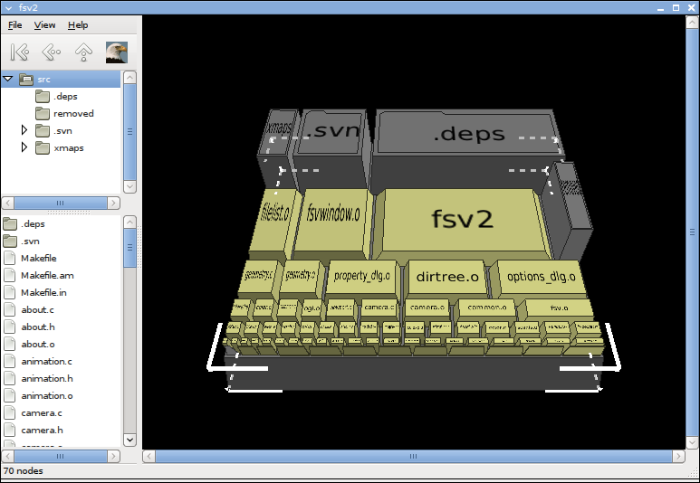

Main window

Toolbar

Sends the camera back to the node it was viewing previously.

Repositions the camera to view the root directory.

Points the camera at a node one level closer to the root directory.

Sends the camera soaring up for a bird's-eye view.
Directory tree

The directory tree displays all or part of the currently loaded directory structure, indicating which directories are collapsed and which are expanded. The selected entry (linux in this example) indicates the current directory, whose contents are listed in the file list.
File list

The file list displays the contents of the current directory. Each entry in the list corresponds to a file system node, and is paired with an icon indicating the node type.
Graphical viewport

This is where the real action happens! The viewport displays the camera view. The camera automatically repositions itself as necessary to observe the current node of interest, which is indicated by white box-corners (as shown above).
The scrollbars may be used to move the camera around; the permitted range of motion depends on the camera's position and the current node.